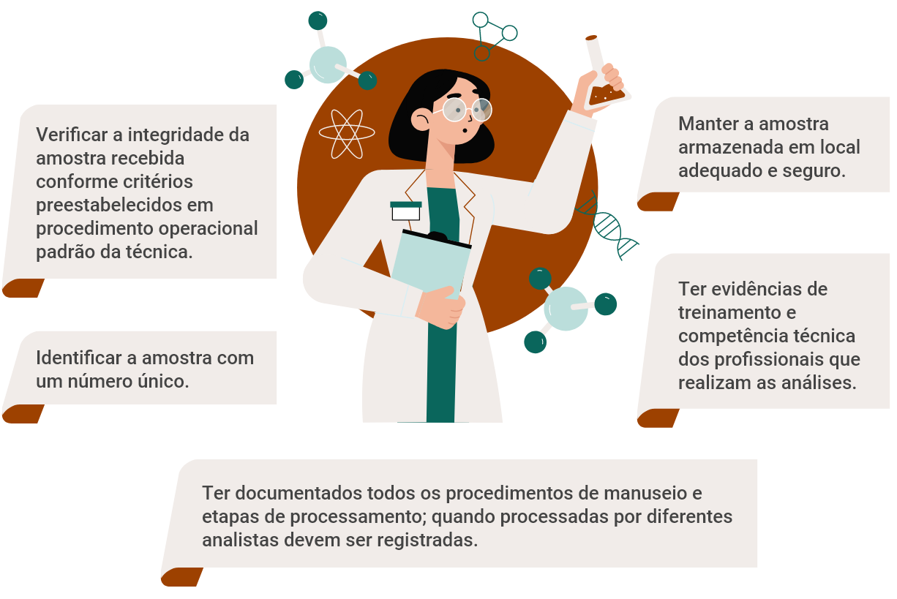

Aula 1
Sistema de Gestão da Qualidade Laboratorial
Quando buscam serviços de saúde, de maneira geral as pessoas o fazem na esperança de encontrar ações de acolhimento, que tanto resultem na diminuição de seu estado de sofrimento físico e psíquico, bem como contribuam para seu bem-estar, promovendo um certo grau de autonomia que as tornem capazes de lidar com seus problemas de saúde.
A prestação de serviços com qualidade é preocupação obrigatória para qualquer serviço de diagnóstico. Entende-se como qualidade na prestação de serviços em um laboratório de diagnóstico das micoses, um conjunto de propriedades que tornam esse laboratório adequado ao atendimento de sua missão, concebida como resposta às necessidades da sociedade e às legítimas expectativas de seus clientes internos e externos.
Atendimento em uma UBS
Significa atender plenamente aos seus requisitos:
- Requisitos legais e normativos (o requisito legal a ser atendido por um laboratório de análises clínicas envolve as Resoluções de Diretoria Colegiada –RDC n° 786/2023 e n° 824/2023 e suas atualizações, da Agência Nacional de Vigilância Sanitária – Anvisa, que está disponível no Portal do Governo Federal).
- Requisitos do Sistema Nacional de Laboratórios de Saúde Pública - SISLAB (estabelecidos conforme a Portaria N° 2031, de 23 de setembro de 2004).
-
Requisitos da sociedade.
Para isso é necessária a implantação de um sistema de gestão da qualidade, buscando assegurar a confiabilidade dos resultados produzidos.
São alguns dos benefícios da implantação de um Sistema de Gestão da Qualidade:
Identificando as práticas na implantação de um Sistema de Gestão da Qualidade
Os elementos-chave na implantação de um sistema de gestão da qualidade são participação e comprometimento de todos, comunicação efetiva entre chefia e profissionais, política de treinamento, avaliação e reconhecimento e criação e divulgação de indicadores de melhoria contínua dos processos.
São requisitos mínimos de um sistema de gestão da qualidade: controle de documentos e registros, gestão de equipamentos, controle do ambiente (temperatura, umidade, limpeza, espaço físico, entre outros), tratamento de não conformidades e reclamações, controle na aquisição de insumos, controle de pessoal (treinamentos, avaliação de competência, documentação pessoal), criação de indicadores de qualidade, avaliações/auditorias periódicas e análise crítica periódica do sistema.
As práticas de qualidade na coleta de material biológico devem se concentrar em boa atenção dos profissionais, comunicação efetiva, com explicações claras e em linguagem adequada; empatia, prontidão dos profissionais, ambiente agradável (limpo, organizado e com expectativa de pouco ruído na sala de espera), entre outros.
Transporte de material biológico
Para o transporte de materiais biológicos o laboratório deve tratar toda amostra biológica como potencialmente contaminada. Observar as normas e procedimentos de acondicionamento e transporte da amostra para o exame solicitado (prazo de entrega, temperatura, disposição das amostras).
- O transporte deverá ser realizado em maleta rígida, identificada pelo símbolo de risco biológico, sob refrigeração quando necessário. Assegurar que contenha alças resistentes para que possa ser carregada.
- Todas as amostras recebidas de coletas externas devem ser entregues ao laboratório com o pedido médico e as informações de coleta.
- Os recipientes de transporte devem ser identificados com etiquetas autocolantes, contendo o símbolo internacional de risco biológico.
-
Registrar em protocolo a remessa do material encaminhado e utilizar o elevador de serviço, quando houver.
As práticas de qualidade analítica envolvem o controle no recebimento das amostras, a conferência dos dados do paciente, bem como os exames solicitados nos pedidos médicos. A rastreabilidade em um laboratório é o processo de monitoramento e registro dos processos considerados críticos para o correto funcionamento do laboratório (recebimento e processamento de amostras, controle de validade de insumos, controle de equipamentos etc.).
A rastreabilidade pode ser feita de forma manual ou por um sistema de gestão (LIS). São propósitos obtidos pela rastreabilidade em um laboratório de diagnóstico:
- Permitir, identificar e resolver problemas e erros no processo de análise.
- Contribuir para a manutenção da conformidade com as normas de qualidade.
- Ajudar na tomada de decisões.
- Garantir a segurança dos dados produzidos.
-
Assegurar a integridade das amostras, desde a coleta até a guarda e manutenção após processamento.
A cadeia de custódia de uma amostra laboratorial é um processo fundamental, que visa garantir sua integridade, desde a coleta ou recebimento (no caso de coleta externa), até o seu descarte. A cadeia de custódia da amostra consiste em:
Cadeia de custódia

O profissional que trabalha em laboratórios de micologia deve conhecer a importância da qualidade nas atividades do laboratório, conhecer os procedimentos e normas de qualidade e biossegurança aplicáveis ao laboratório, desenvolver as ações propostas, dando sugestões de melhoria dos processos, entre outros.
É necessário o total comprometimento do profissional com o sistema de qualidade. Ele deve informar imediatamente a chefia no caso da identificação de situações de não conformidade que possam colocar em risco a integridade da amostra e dos demais profissionais. O tratamento de uma não conformidadeA não conformidade é o não atendimento de um requisito interno ou externo na prestação do serviço. Ou seja, qualquer desvio daquilo que foi determinado em procedimento. deve ser iniciado imediatamente após sua identificação, pois o tratamento adequado de uma não conformidade reflete um bom entendimento da política de qualidade do laboratório.
Para o tratamento de não conformidades é necessário:
- Registrar, descrevendo especificamente, a não conformidade.
- Corrigir ou minimizar o problema a partir de uma disposição imediata.
- Investigar a causa raiz.
- Avaliar a abrangência do problema e sua causa raiz.
- Tomar ações corretivas para evitar recorrências.
-
Realizar o acompanhamento periódico para avaliar a eficácia das ações tomadas.
Cabe à liderança do laboratório se envolver com as atividades do sistema de qualidade, dando oportunidade aos funcionários do laboratório de se capacitarem como multiplicadores da qualidade. Uma estratégia de implementação perpassa pela formação de equipes de melhoria de qualidade nos diversos setores, incentivando a discussão de oportunidades de melhoria dos processos. O líder ou chefe de laboratório deve dar suporte técnico com o objetivo de desenvolver as ações propostas e verificar se os objetivos foram atendidos; em caso contrário, deve-se reiniciar o processo. Monitorar o ambiente de trabalho, buscando evitar acidentes ou desvios de qualidade nos processos, fazer avaliações constantes dos trabalhos (ensaios de proficiência) e comemorar junto com a equipe do laboratório os resultados positivos.
Os objetivos de um sistema de gestão da qualidade laboratorial são:
Fontes de transmissão
PARA A SOCIEDADE
Obter confiança de que os serviços oferecidos pelo laboratório satisfarão
seus requisitos e suas expectativas.
PARA O MINISTÉRIO DA SAÚDE
Prover confiança de que os dados produzidos pelo laboratório
atenderão a todos os requisitos legais e normativos, bem como satisfazer as necessidades da
sociedade que utiliza aquele serviço.
.
PARA O PRÓPRIO LABORATÓRIO
Prevenção, eficácia, eficiência, organização, flexibilidade e
melhoria contínua dos processos.
Um dos princípios de um sistema de gestão da qualidade laboratorial é a documentação dos processos. A confecção dos procedimentos operacionais padrão (POPs) é necessária. Os procedimentos que descrevem os processos técnicos do laboratório devem ser confeccionados preferencialmente em conjunto, com a participação dos profissionais executantes de cada uma das atividades.
Os procedimentos de gestão devem descrever o funcionamento do laboratório e do Sistema de Gestão da Qualidade. Você pode conhecer os documentos básicos da gestão clicando no ícone a seguir.
Indicadores de qualidade
Os Indicadores de Qualidade são ferramentas que ajudam a avaliar e melhorar os processos de trabalho, garantindo a confiabilidade dos resultados. Alguns exemplos de indicadores de qualidade são:
Os indicadores devem ser avaliados periodicamente. Sua divulgação ocorre como uma das entradas esperadas nas reuniões de Análise Crítica, momento em que o diretor do laboratório, juntamente com sua equipeDireção, o representante da Direção, o gerente da Qualidade e convidados da Direção da unidade laboratorial, hospital — anualmente ou quando achar necessário em menor prazo —, analisam o Sistema de Gestão da Qualidade de modo a assegurar sua contínua pertinência, adequação e eficácia., discute o andamento do sistema de gestão da qualidade.
São exemplos de assuntos a serem discutidos em uma reunião de análise crítica:
- Registrar, descrevendo especificamente, a não conformidade.
- Corrigir ou minimizar o problema a partir de uma disposição imediata.
- Investigar a causa raiz.
- Avaliar a abrangência do problema e sua causa raiz.
- Tomar ações corretivas para evitar recorrências.
-
Realizar o acompanhamento periódico para avaliar a eficácia das ações tomadas.